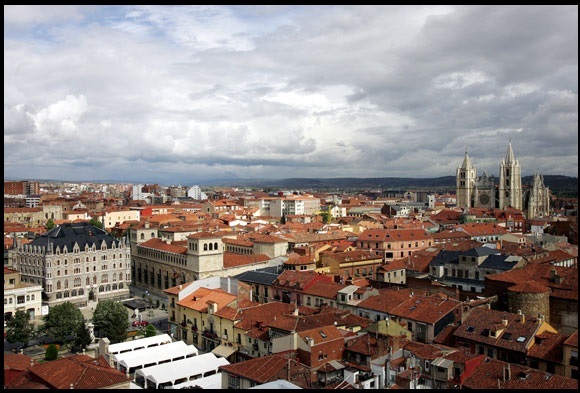
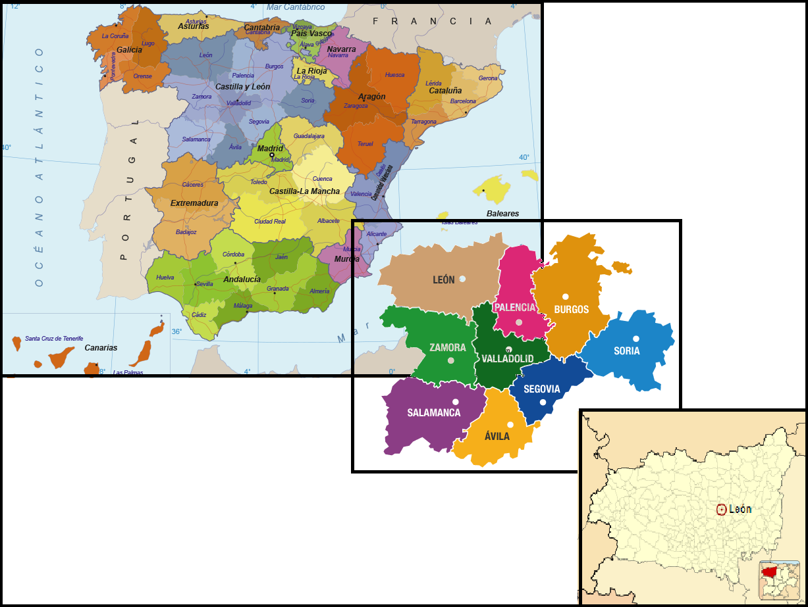
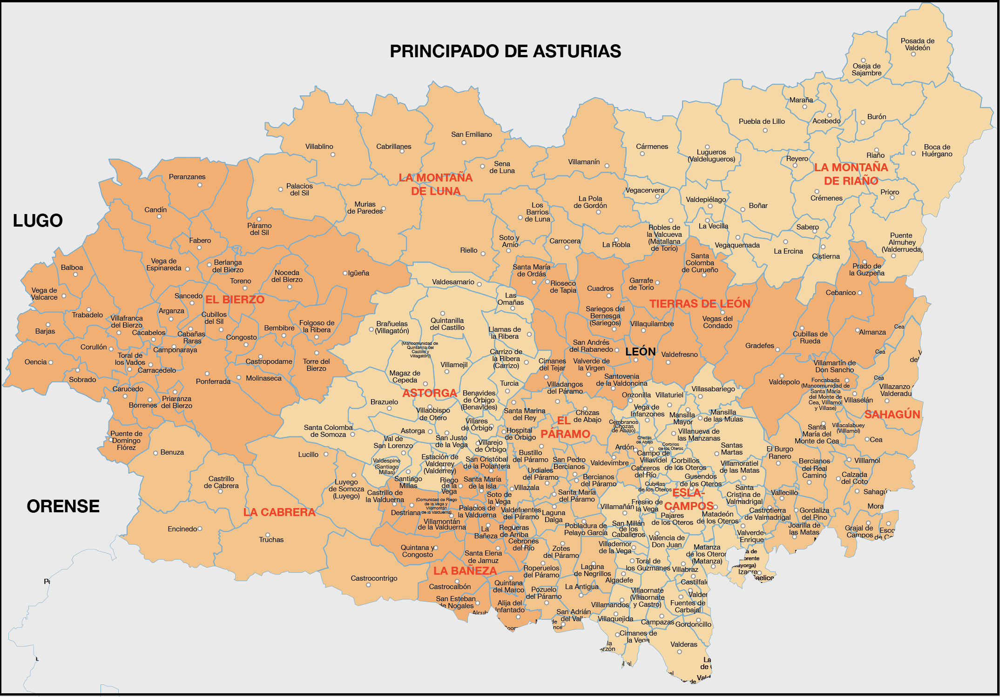

PROVINCIAS |
Localización Geografía Localidades Principales Historia Cultura Naturaleza Tradiciones Otros |
|---|---|
| Wikipedia Ávila Wikipedia Burgos Wikipedia Palencia Wikipedia Salamanca Wikipedia Segovia Wikipedia Soria Wikipedia Valladolid Wikipedia Zamora |

Poesía "La Ciudad Murada"Recinto cerrado con torres y almenas. Por fuera el espacio por dentro la piedra. Por las nueve puertas de nuestra muralla, se sale y se entra. Se sale al espacio infinito, de nubes, de campos, de ríos. Se entra al recinto granítico, de calles, palacios, iglesias. Fuera el espacio abierto. Dentro el recinto íntimo. Antaño, el espacio murado guardaba celoso a sus hijos. Ahora nos queda el recuerdo sellado con piedras de nichos. Torres entalladas, merlones y almenas, cercan el recinto, apoyado en piedras. Hubo nueve puertas de hierro o madera que cerraban herméticamente la ciudad guerrera. Hoy no existen puertas, la ciudad se ha abierto a una vida nueva, con gentes venidas de lejos, con gentes de esta misma tierra. Ávila se abre en sus nueve puertas; al norte Castilla su enseña, al este, amanece siempre a la vida nueva, en el mediodia, los señeros rios de su geografía, Ávila se extiende hacía la solana de la tierra fría, y ya en el oeste el tajo que el río nos deja hizo poner puentes en su misma cerca,para que vinieran gentes de aquí mismo, o tambien de lejos, que Ávila es bandera de cristianos, moros, judíos en tierra mudejar. María Teresa Calvo Jiménez Ir arriba Localización de León La provincia de León se encuentra en España, pertenece a la comunidad de Castilla y León. Ir arriba Geografía de LeónIr arriba Localidades Principales de LeónCitaremos algunas de las ciudades más representativas de cada comarca:
Ir arriba Historia de LeónIr arriba Cultura de LeónIncluyo un enlace a la página para poder ver la guia de Cultura y Ocio disponible. Guía de Cultura y Ocio deL Ayuntamiento de ÁvilaIr arriba Naturaleza de LeónVídeo de la naturaleza de León Ir arriba Tradiciones de León/a>Ir arriba Otras cosas de LeónDejo en el enlace a varias pág. de interés sobre el turismo en León, donde incluyen restaurantes, hoteles, rutas, etc. Guía de Cultura y Ocio deL Ayuntamiento de Ávila Guía de Cultura y Ocio deL Ayuntamiento de Ávila Ir arriba |